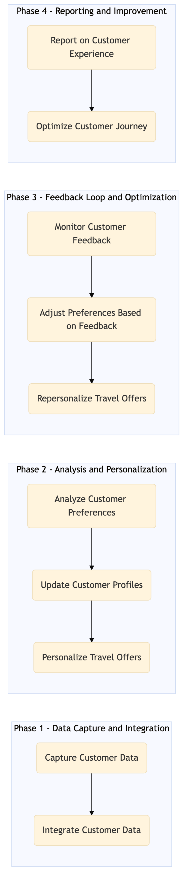

This process document outlines the management of customer profiles and preferences across various OTA and TMC systems to enhance personalization and user experience.
| Trigger | Customer registration, profile update, or preference change |
| Outcome | A seamless and personalized travel experience for customers based on their profiles and preferences. |
| Systems | Expedia Open World Partner Central Amadeus NDC Sabre GDS Travelport EVC One Key TravelAds AWS SageMaker Snowflake Kafka Salesforce Tableau Concur T2 Concur Expense Amex GBT Neo/Complete S/4HANA International SOS Cvent Amex Corporate Card VCN Analytics Cloud Workday |

Click to enlarge
| Step | Name & Pain Point | Role | System | Input | Output | KPI | Flags |
|---|---|---|---|---|---|---|---|
| 1.1 | Capture Customer Data Data entry errors | Data Entry Operator | Expedia Open World, Partner Central | Customer registration form | Customer profile data | 95% accuracy in customer data capture | ⚠ Exception |
| 1.2 | Integrate Customer Data Data format inconsistencies | Integration Specialist | AWS SageMaker, Snowflake | Customer profile data | Integrated customer data in centralized database | 90% successful integration rate | ⚠ Exception |
| 1.3 | Analyze Customer Preferences Complex data patterns | Data Analyst | AWS SageMaker, Tableau | Integrated customer data | Customer preference insights | 85% accuracy in preference analysis | ⚠ Exception |
| 1.4 | Update Customer Profiles Profile synchronization issues | Profile Manager | Expedia Open World, Partner Central | Customer preference insights | Updated customer profiles | 80% successful profile update rate | ⚠ Exception |
| 1.5 | Personalize Travel Offers Offer relevance | Marketing Specialist | TravelAds, Amadeus NDC, Sabre GDS | Updated customer profiles | Personalized travel offers | 75% customer engagement with personalized offers | ⚠ Exception |
| 1.6 | Monitor Customer Feedback Handling negative feedback | Customer Support Specialist | Salesforce, Tableau | Customer feedback | Feedback analysis report | 70% positive customer feedback rate | ⚠ Exception |
| 1.7 | Adjust Preferences Based on Feedback Dynamic preference updates | Profile Manager | Expedia Open World, Partner Central | Feedback analysis report | Adjusted customer preferences | 65% successful preference adjustment rate | ⚠ Exception |
| 1.8 | Repersonalize Travel Offers Offer optimization | Marketing Specialist | TravelAds, Amadeus NDC, Sabre GDS | Adjusted customer preferences | Repersonalized travel offers | 60% increased engagement with repersonalized offers | ⚠ Exception |
| 1.9 | Report on Customer Experience Data interpretation | Data Analyst | Tableau, Analytics Cloud | Customer engagement data | Customer experience report | 55% improvement in customer satisfaction score | ⚠ Exception |
| 1.10 | Optimize Customer Journey Journey mapping | Product Manager | Expedia Open World, Partner Central | Customer experience report | Optimized customer journey | 50% reduction in customer churn rate | ⚠ Exception |